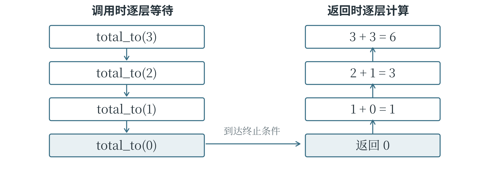

2.3 函数、递归与代码复用
用函数划分工作
同一组测量值换成另一组，求平均数的步骤仍是“总和除以数量”。这样反复出现的工作，可以定义成自己的函数，像调用 print()、len() 那样复用。定义以 def 开始，后面写函数名和参数；冒号之后缩进的部分是函数体。下面将函数命名为 mean，意思是平均数。参数 values 接收数据，sum(values) 求总和，len(values) 取项数，return 再把计算结果交回调用处。
def mean(values):
return sum(values) / len(values)
result = mean([18, 20, 25])
print(result) # 21.0
执行函数定义时，Python 先记下这个函数，并不立即计算平均数。运行到 mean([18, 20, 25])，才把列表交给参数 values，进入函数体：总和为 63，数量为 3，除法结果为 21.0。return 随即结束这次函数执行，把结果交给外面的 result，最后由 print() 显示出来。如果换成另一组非空数值，函数仍使用相同的步骤；空列表会使除数为零，不符合这个函数的使用条件。把相关步骤组织起来，用明确的参数与返回结果提供功能，称为封装。调用者可以先看函数完成什么工作，需要时再查内部细节。以后要对多批资料求平均数或转换格式，就能反复调用同一处代码，也便于集中修改。
函数也可以不接收参数。下面的 announce() 只显示固定文字，但定义和调用时的空括号都不能省略。
def announce():
print("处理完成")
announce()
“显示内容”和“返回结果”是两个操作。显示是把文字送到输出区域，返回是把数据交回调用的位置。没有执行带结果的 return 时，函数会返回 None。下面故意只打印总数，观察外面接到什么。
def show_total(values):
print(sum(values))
result = show_total([2, 3])
print(result)
第一行输出 5，来自函数体内的 print()；第二行输出 None，因为 show_total() 没有把总数返回。若后面还要拿总数继续计算，就应在函数体中使用 return sum(values)，不能把已经出现在屏幕上的文字当成调用者收到的数据。
参数怎样传入函数
一个函数可以有多个参数，也可以给部分参数规定默认值，在调用者省略这项信息时使用。下面的函数把数值增加一段偏移量；offset 表示偏移量，没有另外指定时使用 1。
def shift(value, offset=1):
return value + offset
print(shift(5)) # 6
print(shift(5, 3)) # 8
print(shift(5, offset=3)) # 8
shift(5, 3) 按位置传递，5 交给 value，3 交给 offset；shift(5, offset=3) 则为第二个参数写出了名称。顺序和名称都必须符合函数定义，不能随意把两项交换。默认值是在定义函数时计算的，默认列表不会在每次调用时自动重新创建；若需要每次从一份空列表开始，应把新建列表的语句放在函数体内。
变量名能在哪一部分代码中使用，有自己的范围，称为作用域。参数以及函数体内赋值建立的名字，通常是当前函数调用的局部变量。例如，mean 内部的参数叫 values，外面调用它时使用的列表变量可以叫 temperatures，两个名字不必相同。不同函数里即使都写了名叫 total 的局部变量，也不会仅因同名就联动。函数内直接赋值通常建立局部名字；优先通过参数接收数据、通过返回值交出结果，能够让这种内外关系更清楚。
列表作为参数时发生什么
函数接收列表参数时，并不会自动获得一份新列表。下面的参数 values 与外面的 data 指向同一个对象，所以在函数内执行 append()，会改变调用者原有的数据。
def add_zero(values):
values.append(0)
data = [3, 5]
add_zero(data)
print(data) # [3, 5, 0]
把函数体改成 values = [0]，结果却不同：局部名字改为指向新列表，外面的 data 仍指向原列表。
append() 修改对象，赋值更换名字所指的对象，这一区别到了函数内部仍然成立。如果希望保留原数据，可以先复制，再修改副本并返回；复制嵌套列表时，也仍要考虑内层是否共享。
常用内置函数与数制转换
Python 已经提供了许多可以直接使用的内置函数。sum() 求和，len() 取长度或元素数量，min() 和 max() 求最小值、最大值，abs() 求绝对值，pow(x, y) 计算乘方，sorted() 返回排序后的列表。它们让程序能够直接表达“求总数”“取最大值”这些意图。round(x, n) 用于按指定的小数位数取近似值，省略 n 时取整；当数值恰好处于两个候选值正中间时，采用靠近偶数的规则，例如 round(2.5) 为 2，round(3.5) 为 4。浮点数本身也可能有表示误差，因此它不等同于所有日常场景中的“四舍五入”。
数制决定如何用数码表示一个数。十进制每向左一位，所代表的单位扩大 10 倍；二进制扩大 2 倍，只用 0 和 1；十六进制扩大 16 倍，用 0 至 9 和 A 至 F 表示十六种数码，其中 A 表示十，F 表示十五。例如，二进制的 1101 表示 1×8 + 1×4 + 0×2 + 1，也就是十进制的 13。变的是写法，数值并没有变。
print(bin(26)) # 0b11010
print(hex(26)) # 0x1a
print(int("11010", 2)) # 26
print(int("1A", 16)) # 26
print(format(26, "b")) # 11010
bin() 和 hex() 返回字符串，前面的 0b、0x 分别说明二进制和十六进制。int(文字, 进制) 按指定规则把文字读成整数，十六进制的字母可以大写或小写。format(26, "b") 得到不带 0b 的二进制文字。输入若含多个字段，应先按约定拆开，再分别转换；进制不匹配的数码，例如把 "102" 当作二进制读取，会引发错误。
递归如何一层层返回
递归是函数在执行过程中调用自身。它适合把某个问题缩小成同类问题，再逐层求解。以从 1 加到正整数 n 为例，前 n 项的和等于“前 n-1 项的和再加 n”。约定 n 为非负整数，n = 0 时没有数要加，总和就是 0。这样就有了一个直接结束的情况，也有了向它不断靠近的方法。
def total_to(n):
if n == 0:
return 0
return n + total_to(n - 1)
print(total_to(3)) # 6
计算 total_to(3) 时，函数需要先知道 total_to(2) 的结果；后者又要等待 total_to(1)，再等到 total_to(0)。每次调用都有各自的参数和执行位置，外层不会因为出现了新调用而消失。直到最内层返回 0，等待的计算才依次完成：1 + 0 得到 1，2 + 1 得到 3，3 + 3 得到 6。图 2-4 用箭头表示这个先深入、再返回的过程。

递归需要终止条件，还需要每次调用真正接近终止条件。如果把 n - 1 写成 n，问题大小就没有改变；如果把负整数交给上面的函数，它也不会走到 0。Python 对递归深度有限制，递归过深会出现 RecursionError。
这个求和问题也能直接用循环或 sum(range(1, n + 1)) 完成。递归提供了一种组织思路，是否采用，还要看问题结构和执行开销，不能认为写成递归就一定更快。